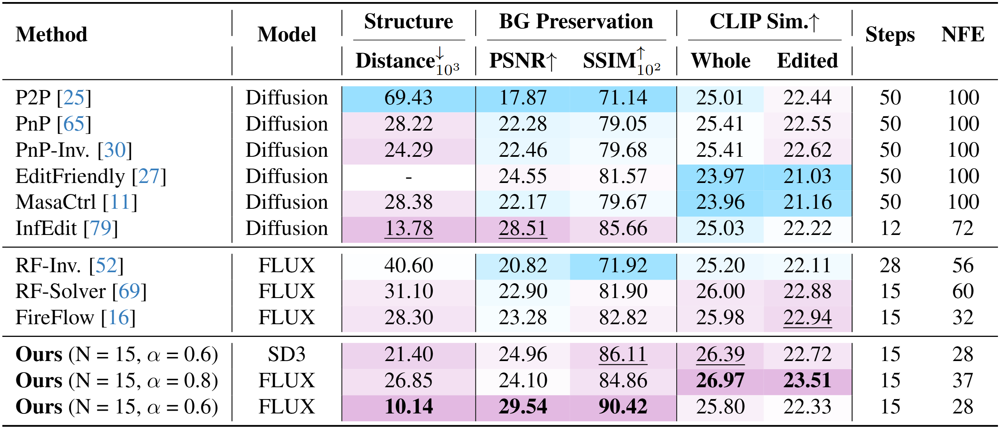
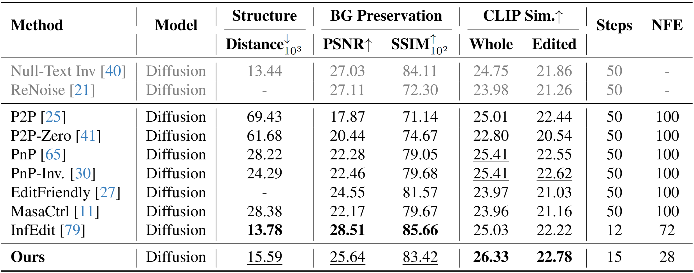
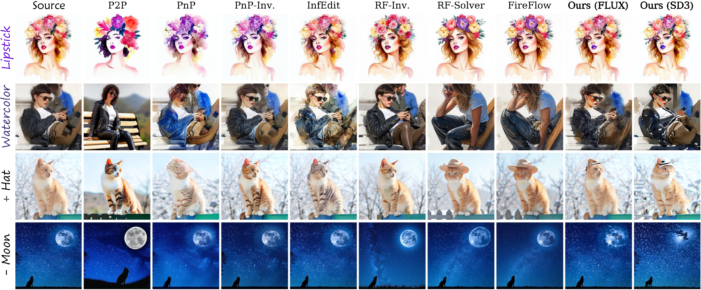

Quantitative Comparison

Text-driven image editing comparison on PIE-Bench.
We report the peer-reviewed results of each baseline, and evaluate our proposed Uni-Edit using the relatively lightweight Stable Diffusion 3 (SD3) and FLUX to demonstrate the effectiveness.
The best and second best results are bolded and underlined, respectively.
Cells are highlighted from worse to better.

Text-driven image editing comparison on PIE-Bench based on Diffusion models.
We evaluate our proposed Uni-Edit using SDXL (\(\texttt{RealVisXL_V4.0}\)).
We keep the same hyper-parameter setting with our main experiments (i.e., \(\alpha\) = 0.6 and \(\omega\) = 5), and adopt 50 and 15 as steps.
Besides tuning-based methods are marked in gray, the best and second best results are bolded and underlined, respectively.
Qualitative Comparison
